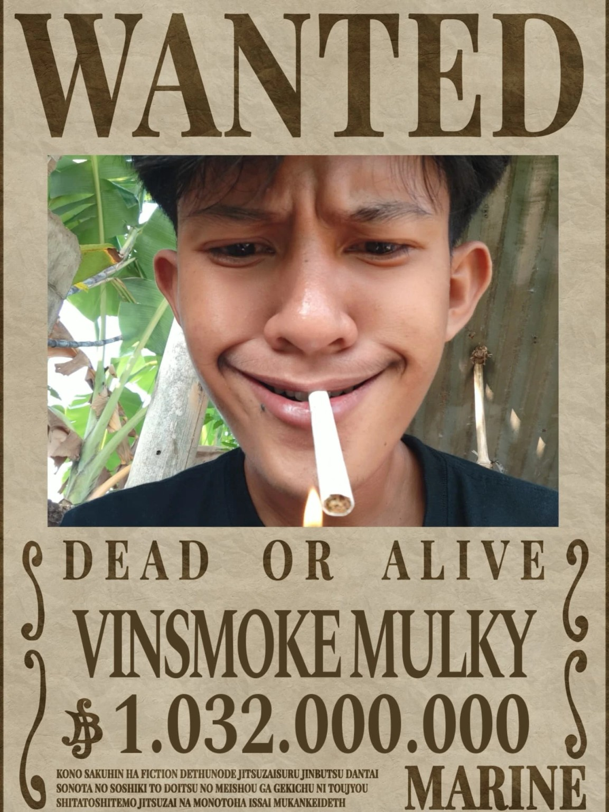
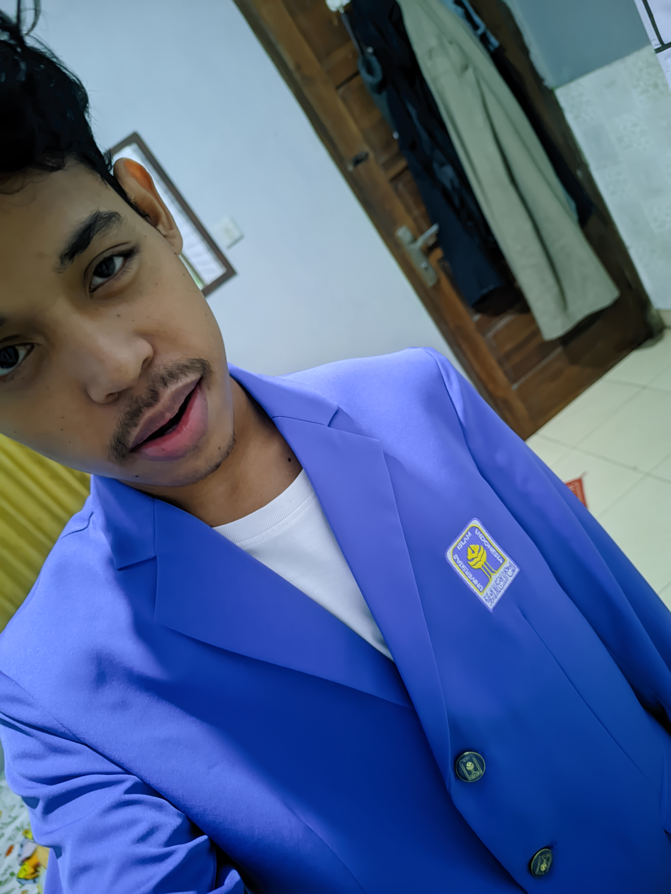
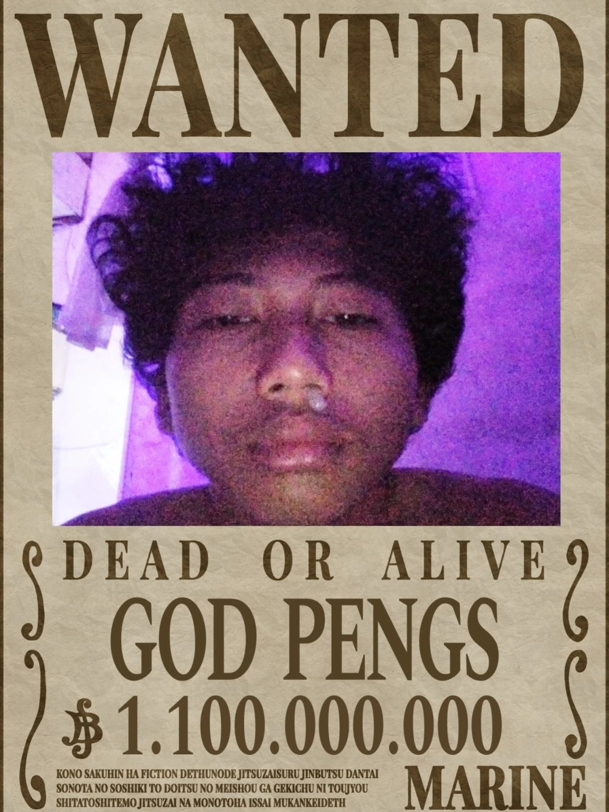
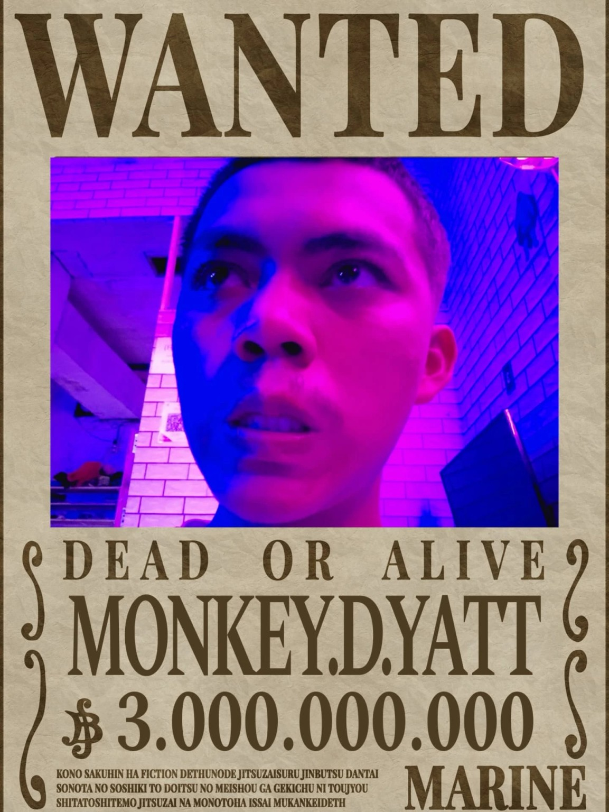
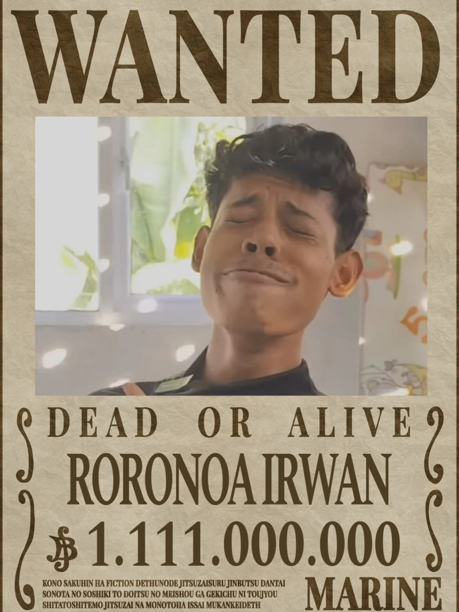

Mulki
📍 Cilegon
Perjalanan, pertemanan, dan cerita mahasiswa
Universitas Islam Indonesia
Mahasiswa yang sedang belajar membuat website

Website sederhana ini dibuat sebagai latihan pembuatan web. Di dalamnya terdapat profil dan galeri foto bersama teman-teman.
Empat orang, satu cerita.

📍 Cilegon

📍 Cilegon

📍 Lampung

📍 Cilegon
Foto-foto kami